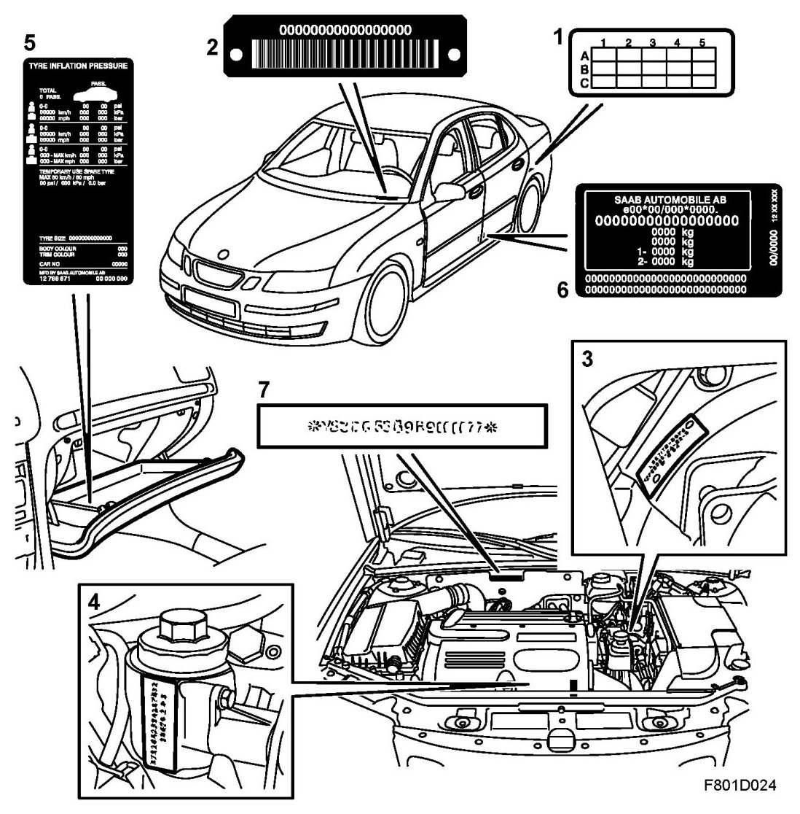
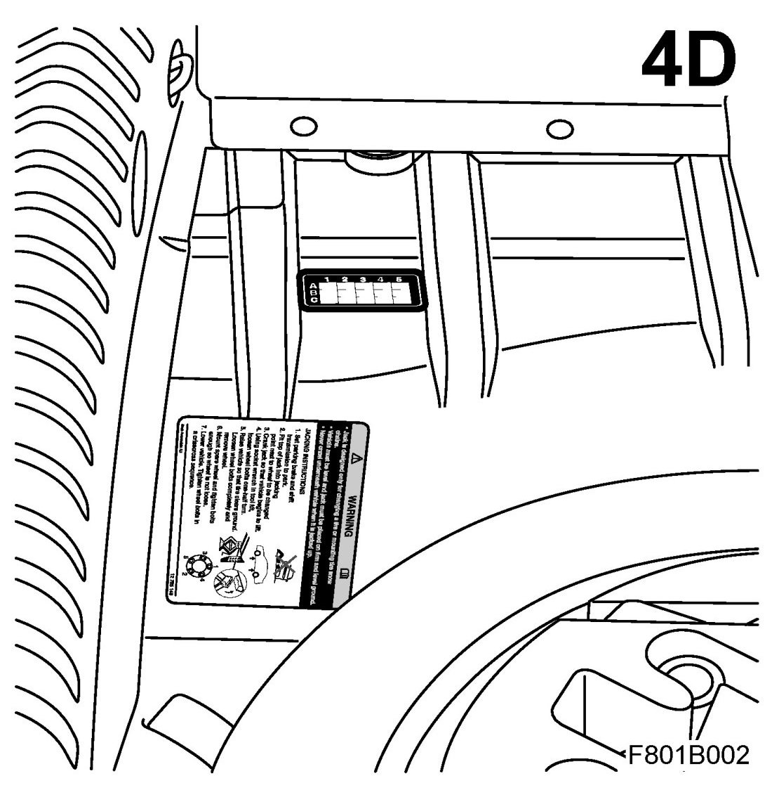
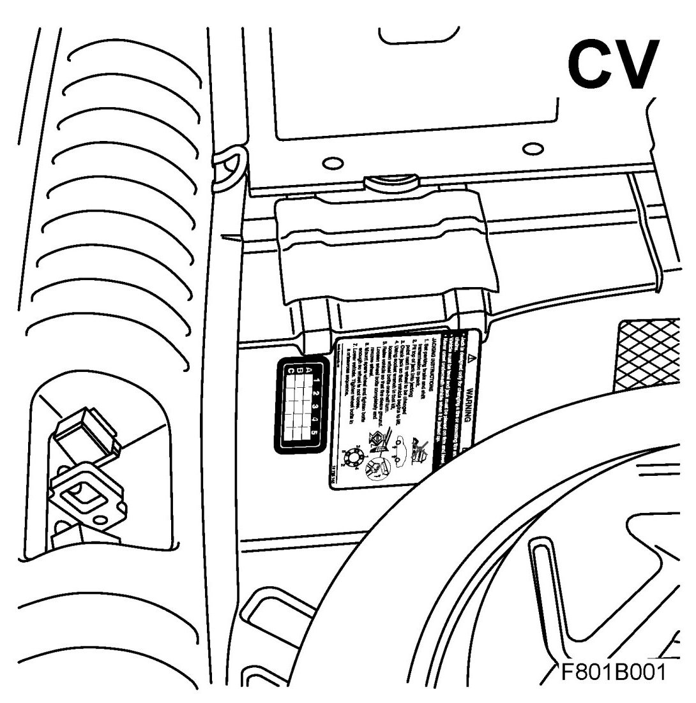

Plates and Labels
Plates And Labels
When contacting a Saab dealer, it may sometimes be necessary to quote the car's VIN, engine number and gearbox number.

1. Modification identity plate, to left of spare wheel
2. VIN and bar-code, inside windscreen
3. Gearbox number
4. Engine number
5. Label with tire pressure and colour codes (trim and body)
6. VIN plate including EU approval number
7. VIN (stamped in body)
Fitting the modification identity plate
From and including M04 the modification identity plate is not fitted in cars at the factory but is in the car's Warranty and Service Book. For the markets which require marking in the car, the plate shall be fitted as necessary in accordance with the following:
1. Open the boot lid and lift up the floor panel.
2. Clean the body surface where the plate is to be affixed with 93 160 907 Cleaning Agent. Remove the plastic backing from the rear of the plate.
3. Press on the plate in accordance with the illustration.
- 4D

- CV

4. Mark the plate in the box as directed, lower the floor panel and close the boot lid.